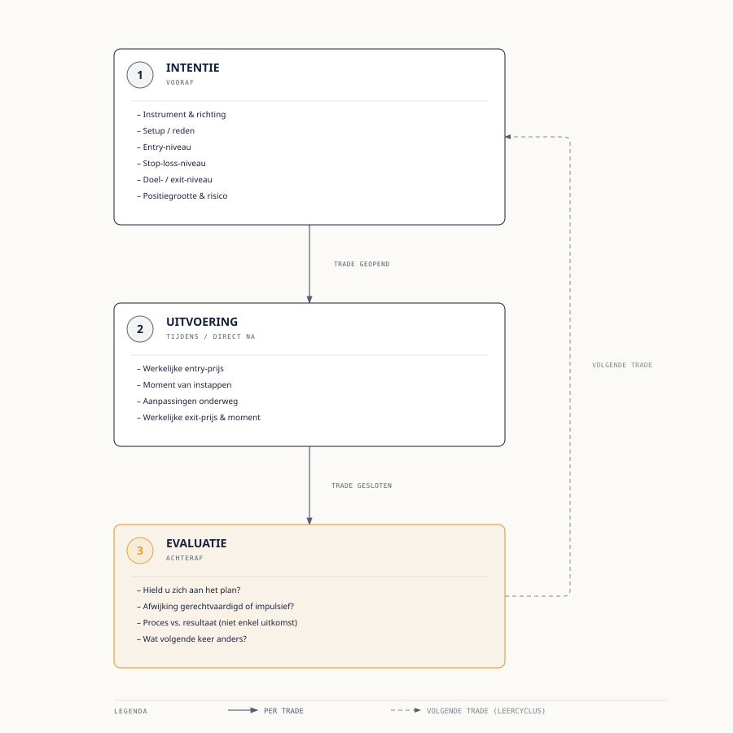

Cursus Systematisch Traden · Niveau 1 (Fundament) · Deel 9 van 30
Een trade-logboek bijhouden Intentie, uitvoering, evaluatie.
Dit deel lost het derde hoofdprobleem uit deel 8 op: het ontbreken van een mechanisme om van eigen gedrag te leren. U leert de structuur intentie/uitvoering/evaluatie, hoe u trades consistent tagt, hoe de P&L-formule bij het loggen wordt toegepast, en hoe u een eigen logboek opzet dat laagdrempelig genoeg is om vol te houden. Fenna start deze week haar eerste volledige logboek.
6secties
±50 minleestijd + werkboek
4controlevragen
N1Fundament
Disclaimer. Educatieve content, geen financieel advies. Het voorbeeld in dit deel gebruikt een fictief instrument en fictieve prijzen, geen aanbeveling voor een concreet aandeel. Trading kent aanzienlijk verliesrisico, tot en met volledig verlies van de inzet, en bij CFD's/hefboomproducten kan het verlies groter zijn dan de inzet. Het bijhouden van een trade-logboek verbetert de kwaliteit van uw besluitvorming en zelfinzicht, maar garandeert geen winstgevend resultaat.
Niveau 1 · Fundament: ① Introductie → ② Markten/orderboek → ③ Ordertypes → ④ Brokerlandschap → ⑤ Charts lezen → ⑥ Technische analyse → ⑦ Fundamentele analyse → ⑧ Tradingpsychologie → ⑨ Trade-logboek (hier) → ⑩ Synthese
01
Waarom een logboek de basis is van alle verbetering
⏱ 8 min
In deel 8 zag u dat de meeste retail-traders niet primair verliezen door te weinig marktkennis, maar door gedrag onder druk — en dat het derde hoofdprobleem was: geen mechanisme om van dat gedrag te leren. Dit deel lost precies dat probleem op.
Verbetering, in trading of in vrijwel elke andere vaardigheid, vereist drie dingen: een vastgelegd uitgangspunt (wat was de bedoeling), een vastgelegde uitkomst (wat gebeurde er echt), en een moment van reflectie waarin u de twee naast elkaar legt (wat leert u daarvan). Zonder die vastlegging is elke trade een geïsoleerde gebeurtenis, onderhevig aan een geheugen dat notoir onbetrouwbaar is voor dit soort dingen: mensen onthouden winnende trades gedetailleerder en gunstiger dan verliezende, en vergeten routinematig het exacte moment en de exacte reden waarom ze een beslissing namen.
Een trade-logboek is geen boekhoudkundige verplichting en geen bijzaak naast het "echte" traden — het ís, samen met risicomanagement, de kern van wat traden systematisch maakt in plaats van toevallig. Elke andere vaardigheid die in deze cursus verderop aan bod komt — een strategy blueprint schrijven (deel 12), backtesten (deel 16), een tradingplan opstellen (deel 17) — steunt uiteindelijk op de vraag "wat deed ik werkelijk, en werkte dat?". Die vraag kan alleen betrouwbaar beantwoord worden als de trades zelf zijn vastgelegd.
02
De structuur: intentie, uitvoering, evaluatie
⏱ 12 min
Elke trade in het logboek wordt vastgelegd in drie stappen, die op drie verschillende momenten worden ingevuld.
2.1 Intentie — vooraf
De intentie legt vast wat de bedoeling was, vóórdat de trade wordt geopend of vlak bij het openen ervan, dus vóórdat het resultaat bekend is. Dit is het belangrijkste en meest verwaarloosde onderdeel van een logboek, omdat het de enige stap is die niet achteraf gereconstrueerd kan worden zonder vertekening — zodra u weet hoe een trade afliep, kleurt die kennis onvermijdelijk uw herinnering aan wat u "eigenlijk" van plan was.
Een volledige intentie bevat minimaal:
Instrument en richting — welk instrument, long of short.
Stop-loss-niveau — waar de trade wordt afgesloten als het misgaat (deel 3).
Doel/exit-niveau — waar de trade wordt afgesloten bij succes, of welke voorwaarde tot verkoop leidt.
Positiegrootte en risico — hoeveel wordt ingezet, en hoeveel euro staat er maximaal op het spel.
2.2 Uitvoering — tijdens/direct na
De uitvoering legt vast wat er werkelijk gebeurde: de daadwerkelijke entry-prijs (die kan afwijken van de geplande intentie door slippage, zie deel 3), het daadwerkelijke moment van instappen, eventuele aanpassingen onderweg (stop-loss verplaatst, deels verkocht), en de uiteindelijke exit-prijs en -moment.
Het verschil tussen intentie en uitvoering is op zichzelf al waardevolle informatie: stapte u in op het geplande niveau, of eerder/later dan gepland? Werd de stop-loss aangepast, en zo ja, waarom — was dat een doordachte bijstelling of een emotionele reactie zoals beschreven in deel 8?
2.3 Evaluatie — achteraf
De evaluatie is het reflectiemoment, ingevuld ná het sluiten van de trade, waarin u de intentie en de uitvoering naast elkaar legt. Kernvragen: hield u zich aan het plan? Zo nee, waarom niet — en was die afwijking gerechtvaardigd door nieuwe informatie, of was het een impulsieve beslissing (FOMO, revenge trading, verliesaversie, zoals in deel 8)? Wat zou u de volgende keer in een vergelijkbare situatie anders doen?
Belangrijk: de evaluatie gaat over het proces, niet uitsluitend over het resultaat. Een trade die volgens plan verliep — juiste setup, juiste entry, stop-loss gerespecteerd — maar toch verlies opleverde omdat de markt nu eenmaal niet altijd de kant op beweegt die de setup suggereerde, is een goede trade met een slechte uitkomst. Omgekeerd is een trade die winst opleverde ondanks dat de stop-loss genegeerd werd en de positie veel te groot was, een slechte trade met een goede uitkomst — en die tweede categorie is psychologisch gevaarlijker, omdat het toevallige succes het slechte gedrag lijkt te bevestigen (vergelijk de overmoed-valkuil uit deel 8).

Figuur 9-1 — Trade-logboekstructuur: intentie, uitvoering en evaluatie per trade
Controlevraag
Uit Werkboek deel 9, Opdracht 2
1Fenna's intentie: long instappen op €40,00 na een terugval naar de SMA(20) in een opwaartse trend, stop-loss €38,50, doel €44,00, setuptype trend-vervolg. Uitvoering: de koers stijgt sneller dan verwacht en ze stapt uiteindelijk in op €41,20, uit angst de trade helemaal te missen; de stop-loss verplaatst ze niet. De trade raakt na drie dagen het doel van €44,00. (a) Wat is het verschil tussen de geplande en de daadwerkelijke entry-prijs, en welke valkuil uit deel 8 speelt hier mee? (b) Was dit een "goede trade met een goede uitkomst", of eerder een andere categorie uit sectie 2.3? Beargumenteer. (c) Welke tag(s) uit sectie 3 zou u aan deze trade geven?Toon antwoord
a) Het verschil is €1,20 (€41,20 − €40,00). Dit past bij FOMO: Fenna stapte in uit angst de beweging te missen, niet omdat haar oorspronkelijke setup-criteria op dat moment opnieuw golden.
b) Dit is een grensgeval dat de reader expliciet benoemt: het resultaat was goed (doel geraakt), maar het proces week af van de intentie door een impulsieve, angstgedreven aanpassing van het instapmoment. Het is dus niet zuiver "goed proces, goede uitkomst" — de latere entry verhoogde het risico ten opzichte van de stop-loss zonder dat de positiegrootte of stop werd aangepast, en de afwijking was niet gebaseerd op nieuwe informatie maar op emotie. Een sterk antwoord benoemt dat de goede uitkomst hier het risico van de afwijking maskeert, wat precies het gevaar is dat de reader beschrijft bij "een slechte trade met een goede uitkomst".
c) Bijvoorbeeld trend-vervolg (setuptype), fomo (emotionele staat bij instap), afwijking-impulsief (regelnaleving).
03
Trades taggen
⏱ 8 min
Naast de drie kernonderdelen krijgt elke trade een of meer tags: korte, consistente labels die het mogelijk maken om later trades te groeperen en patronen te herkennen. Zonder tags is een logboek een lijst losse verhalen; mét consistente tags wordt het een doorzoekbare dataset.
Bruikbare tagcategorieën:
Setuptype — bijvoorbeeld trend-vervolg, steun-bounce, uitbraak, nieuws-gedreven.
Emotionele staat bij instap — bijvoorbeeld rustig, fomo, revenge, overmoedig (koppeling met deel 8).
Marktomstandigheid — bijvoorbeeld trending, zijwaarts, hoog-volatiel (vooruitblik op deel 19 in niveau 2).
Regelnaleving — bijvoorbeeld volgens-plan, afwijking-gerechtvaardigd, afwijking-impulsief.
Het punt van taggen is niet compleetheid om de compleetheid, maar herbruikbaarheid: na twintig of dertig trades kunt u filteren op bijvoorbeeld alle trades getagd met fomo en zien of die als groep systematisch slechter presteren dan trades getagd met rustig. Dat soort inzicht is onmogelijk uit een geheugen te halen, maar direct zichtbaar in een consistent getagd logboek. Kies een beperkte, vaste set tags voordat u begint, en breid die pas uit als u merkt dat een categorie ontbreekt — een wildgroei aan eenmalige tags ondermijnt juist de herbruikbaarheid die het doel is.
04
De P&L-formule toepassen bij het loggen
⏱ 8 min
Elke afgesloten trade wordt gelogd met het daadwerkelijke resultaat, berekend met de formule uit eerdere delen:
Dit resultaat hoort bij de uitvoering, niet bij de intentie — de intentie bevat immers geen daadwerkelijke exit-prijs, alleen een gepland doel. In het evaluatiemoment vergelijkt u vervolgens het geplande doel met het daadwerkelijke resultaat: kwam de exit overeen met het plan, of week die af, en waarom?
Controlevraag
Uit Werkboek deel 9, Opdracht 1
1Bereken voor elk van de volgende afgesloten trades de pnl in euro's en de pnl_pct: (a) Long, 25 stuks, entry €80,00, exit €86,00. (b) Short, 100 stuks, entry €14,50, exit €13,20. (c) Long, 60 stuks, entry €33,00, exit €31,50.Toon antwoord
Een logboek werkt alleen als het laagdrempelig genoeg is om vol te houden. Een uitgebreid formulier dat twintig minuten per trade kost, wordt na een paar weken overgeslagen zodra de motivatie zakt — precies op de momenten (na een verlies, na een emotionele trade) dat vastlegging het meest waardevol is. Een simpele tabel met vaste kolommen (datum, instrument, richting, intentie-samenvatting, entry, stop, doel, werkelijke exit, pnl, pnl%, tags, evaluatie-notitie) is voor de meeste particuliere traders voldoende, of het nu in een spreadsheet, een notitieapp of specifieke journaling-software wordt bijgehouden — het instrument maakt minder uit dan de consistentie waarmee u het invult.
Kolom
Fase
Voorbeeld
Datum
—
2026-08-24
Instrument, richting
Intentie
Aandeel X, long
Intentie-samenvatting, entry, stop, doel
Intentie
Trend-vervolg SMA(50); €52,00 / €50,00 / €55,00
Werkelijke exit
Uitvoering
€54,50
Pnl, pnl%
Uitvoering
€100,00 / 4,81%
Tags
Uitvoering/evaluatie
trend-vervolg, volgens-plan
Evaluatie-notitie
Evaluatie
Hield me aan het plan; geen aanpassing stop-loss
Twee gewoontes maken het verschil tussen een logboek dat na twee weken doodbloedt en een logboek dat daadwerkelijk waarde oplevert: de intentie invullen vóórdat u instapt (niet achteraf "reconstrueren"), en een vaste, korte tijd inruimen voor de evaluatie — bijvoorbeeld elke zondagavond de trades van de week doorlopen, in plaats van te wachten tot er "toch een keer tijd is".
Kern
Liever een eenvoudig logboek dat u consequent bijhoudt, dan een uitgebreid logboek dat u na twee weken laat verslonzen. Consistentie verslaat volledigheid.
06
Fenna begint serieus
⏱ 6 min
Tot nu toe hield Fenna een los Excel-bestand bij met alleen instrument, datum en resultaat — geen intentie, geen evaluatie, geen tags. Na het herkennen van haar eigen patronen in deel 8 begint ze deze week voor het eerst een volledig logboek met de intentie/uitvoering/evaluatie-structuur.
Haar eerste ingevulde trade: een long-positie in een fictief large-capaandeel, met als intentie een instap na een terugval naar de SMA(50) in een duidelijke opwaartse trend (setuptype trend-vervolg), een stop-loss net onder een recent swing-low, en een doel bij een eerdere weerstandszone. De uitvoering wijkt licht af: door een korte vertraging bij het plaatsen van de order stapt ze een fractie hoger in dan gepland — geen dramatische afwijking, maar wel iets wat ze nu voor het eerst expliciet vastlegt in plaats van te laten verdwijnen.
Bij de evaluatie, een paar dagen later wanneer de trade het doel raakt, noteert ze dat ze de stop-loss niet heeft verplaatst ondanks de verleiding om "'m wat ruimer te zetten" toen de koers er even dichtbij kwam — een klein, maar voor haar nieuw soort discipline-moment, dat ze tagt met volgens-plan.
Ze realiseert zich dat dit haar eerste trade ooit is waarvan ze over een maand nog precies kan navertellen wat de bedoeling was en of ze zich eraan hield — niet omdat haar geheugen ineens beter werkt, maar omdat het nu ergens staat.
Vooruitblik
Fenna's eerste volledige logboek is het scharnierpunt tussen "traden op gevoel" en de weg naar een systeem, die in deel 10 verder wordt uitgewerkt.
Controlevraag
Uit Werkboek deel 9, Opdracht 4
1Zet uw eigen logboek op: (a) kies het instrument (spreadsheet, notitieapp, of iets anders) en zet de kolommen op zoals beschreven in sectie 5 van de reader; (b) stel uw eigen vaste, beperkte tagset samen (minimaal de vier categorieën uit sectie 3), met per categorie 3 tot 6 concrete tags; (c) plan een vast, terugkerend moment in uw week voor de evaluatie van de afgelopen periode, en noteer dat moment concreet.Toon antwoord
Geen modelantwoord — dit is een persoonlijke opzetopdracht die u de komende weken daadwerkelijk gaat gebruiken. Ter controle: uw kolommenset moet minstens de intentie-, uitvoerings- en evaluatievelden uit sectie 2 van de reader dekken, uw tagset moet klein en herbruikbaar zijn (liever acht vaste tags die u consequent gebruikt dan dertig eenmalige), en uw evaluatiemoment moet concreet en terugkerend zijn — "als ik er tijd voor heb" is geen bruikbare planning.
Verder naar deel 10
Deel 10: de synthese van niveau 1 — hoe markten, ordertypes, charts, analyse, psychologie en het trade-logboek samenkomen in de eerste stap naar een systeem.